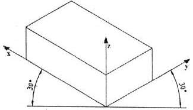

Slika 1:
Pri pravokotni projekciji, ki smo jo spoznali v zadnji uèni enoti, so rešili ta problem tako, da so uporabili tri risalne ravnine; ravnino za naris, ravnino za tloris in ravnino za stranski ris.
Slika 2 in slika 3:
Telesa, ki imajo doloèeno prostornino in zavzemajo nek prostor, pa lahko narišemo tudi v eni sami risalni ravnini. Ta ravnina seka vse tri prostorske osi. Èe nagnemo telo ali predmet za 45 kotnih stopinj naprej v smeri proti gledalcu, ostanejo navpièni robovi za opazovalca še vedno navpièni. Vodoravni robovi pa so nagnjeni za 30 kotnih stopinj.
Izometrièno projekcijo uporabimo tedaj, ko upodobljeni predmet nima kakšnih bolj zapletenih ali pomembnejših podrobnosti na kateri od stranskih ploskev.

Slika 4:
Beseda izometrièna projekcija pomeni istomerna projekcija. Istomerna zato, ker so vsi poševni robovi oziroma razsežnosti narisani v istem merilu. Navpièni in vsi poševni robovi predmeta, ki je narisan v izometrièni projekciji, so torej narisani v merilu 1:1:1.
1. Vprašanja za usmerjanje pozornosti in usvajanje novih besed:
1. Koliko razsežnosti zavzemajo telesa?
2. Kako razsežnosti še imenujemo drugaèe?
3. Koliko razsežnosti zavzemajo narisani liki?
4. Kako se glasi slovenska beseda za besedo izometrièna?
5. Kaj pomeni beseda izometrièna?
6. Kakšna je osnovna znaèilnost izometriène projekcije?
7. Kdaj uporabimo izometrièno projekcijo?
8. Koliko risalnih ravnin potrebujemo za izometrièno projekcijo?
9. Koliko razsežnosti zavzema risalna površina?
10. Katero projekcijo kaže slika 3?
11. Kaj kaže slika 4?
12. Pod kakšnim kotom sta nagnjeni poševni osi na sliki 4?
2. Zapiši od ene do pet kljuènih besed, ki povzemajo vsebino te uène enote.
3. Vprašanja za razmislek, ponavljanje in povezovanje z lastno izkušnjo:
1. Koliko pogledov vsebuje izometrièna projekcija?
2. Zakaj lahko vidimo v izometrièni projekciji vse tri prostorske ravnine, èeprav imamo samo eno risalno ravnino?
4. Domaèa naloga:
V enem do petih stavkih zapiši, kaj ti je v tej uèni enoti najbolj ostalo v spominu.